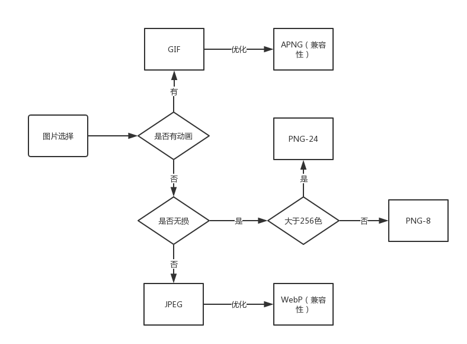

# 合理选择图片格式
在 HTTP 一节中，我们知道一个页面在渲染的时候除了 HTML，JS，CSS 以外，还包括了很多第三方资源，包括图片，视频以及其他多媒体资源，这些第三方资源往往会比较大，可能会在加载的时候产生性能问题，这一节我们就来讨论一下如何选择图片？
其实，页面中的 HTML，JS，CSS 通过压缩合并打包后，体积已经减小了很多，再想更进一步优化很难。我们不妨换个方向，优化一下第三方资源，例如：图片，媒体文件等。
图片有很多种格式，并且在压缩以后大小差别很大，所以在合适的地方选择合适类型的图片可以起到良好的性能优化效果。我们优化图片的核心点：在相同的图片质量基础上，尽可能地让图片大小更小。
# 常见图片格式
当前网页中常用的图片格式如下：
- JPEG
- PNG
- GIF
- SVG
- APNG (GIF 的增强版，兼容性不佳)
- WebP (JPEG 的增强版，兼容性不佳)
# 位图和矢量图
- 位图：记录的是图片上每一个像素点的色相、饱和度、明度。当你打开一张图片时，会根据记录的每一个像素点进行排列，将排列的结果显示给你看。
- 矢量图：记录的是元素形状及颜色的算法，当你打开一张图片时，会根据图中的算法进行运算，将运算结果显示给你看。
注意
- 位图缩放变大后不能保持图片质量，可能会失帧，优点是能很细腻地表达图片的效果。
- 矢量图可以无限放大或缩小，不会影响图片质量，文件体积较小，编辑灵活。缺点是表达的色彩层次不清，整体观感效果不如位图。
上述的格式中， SVG 属于矢量图，JPEG，PNG，GIF 属于位图。
# 具体图片格式介绍
这一节我们详细地介绍一下上面提到的图片格式。
# 索引色和直接色
索引色（Indexed Color）：挑选一副图片中最有代表性的若干种颜色（通常不超过 256 种），编制成颜色表。在表示图片中每一个点的颜色信息时，不直接使用这个点的颜色信息，而使用颜色表的索引。
直接色 (direct color)：使用四个数字来代表一种颜色，这四个数字分别代表这个颜色中红色 R、绿色 G、蓝色 B 。这 3 个维度分别支持 256 种变化，所以直接色可以表示 2 的 24 次方种颜色。
注意
- 索引色能表示的颜色少，只能表示一些常规的颜色，但能大大减少图片的大小。
- 直接色能表示的颜色多，能够表达生动的图像效果，但图片的大小往往比较大。
# SVG
SVG 是无损的、矢量图。在它内部存储着图片绘制的函数，通常包括绘制点，线，常规图形等。
- 体积小。
- 无损压缩。
- 图片质量最佳，但不适合过渡，渐变等细腻的颜色。
# JPEG
JPEG 是有损的、采用直接色的、位图。
- 有损压缩，体积可以压的更小。
- 直接色，能表示的颜色多。
JPEG 非常适合用来存储照片，用来表达更生动的图像效果，比如颜色渐变。
# PNG
PNG 又分为 PNG-8 和 PNG-24，可以根据颜色的多少来选择适当的格式。
# PNG-8
PNG-8 是 PNG 的索引色版本。PNG-8 是无损的、使用索引色的、位图。
- 支持透明。
- 无损压缩，压缩比不高。
- 索引色，能表示的颜色少。
# PNG-24
PNG-24 是 PNG 的直接色版本。PNG-24 是无损的、使用直接色的、位图。
- 支持透明。
- 无损压缩，压缩比不高。
- 直接色，能表示的颜色多。
# GIF
GIF 是无损的、采用索引色的、位图。
- 支持透明。
- 支持动画。
- 无损压缩，压缩比不高。
- 索引色，能表示的颜色少。
# WebP
WebP 是谷歌开发的一种新图片格式，WebP 是同时支持有损和无损压缩的、使用直接色的、位图。
在无损压缩的情况下，相同质量的 WebP 图片，文件大小要比 PNG 小 26%；
在有损压缩的情况下，具有相同图片精度的 WebP 图片，文件大小要比 JPEG 小 25%~34%；
# APNG
APNG 是基于 PNG 格式扩展的一种动画格式，增加了对动画图像的支持，同时加入了 24 位图像和 8 位 Alpha 透明度的支持，这意味着动画将拥有更好的质量，其诞生的目的是为了替代老旧的 GIF 格式。
- 支持 24 位图片
- 支持 8 位 Alpha 透明通道
- 向下兼容 PNG
# 如何减少图片大小
我们通过图片压缩的方式来减少图片大小，图片压缩又分为有损压缩和无损压缩。
- 无损压缩：使用“无损”过滤器处理图像，对像素数据进行压缩。意味着图像变小的同时，不会对图片质量造成损害。
- 有损压缩：使用“有损”过滤器处理图像，去除某些像素数据。意味着图像可以被压缩得更小，但对质量有害。如果你一次又一次地以有损压缩保存图像，图像质量会越来越差。
提示
矢量图是通过函数计算的出来的，所以矢量图的压缩，都是无损压缩。
上述的格式中，无损压缩的有：GIF，PNG。有损压缩的有：JPEG。
# 图片选择方案
1、首选矢量图形，如不能满足需求，则选择位图。
2、选择适合的位图，流程图如下：

提示
虽然本文介绍了几种常见图片格式的选择方案，但可能在实际开发中并不需要一定用图片，例如：base64 代替小图标，字体图标代替图标等方案也是一种不错的选择，所以要具体问题具体分析。